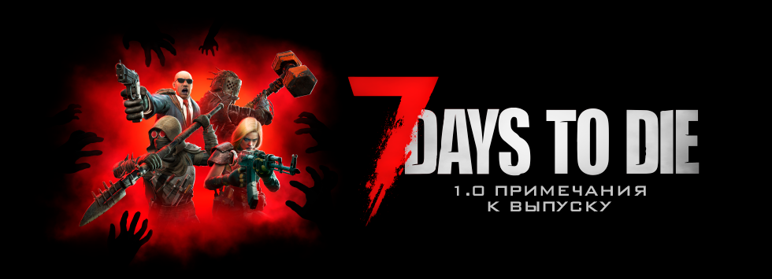
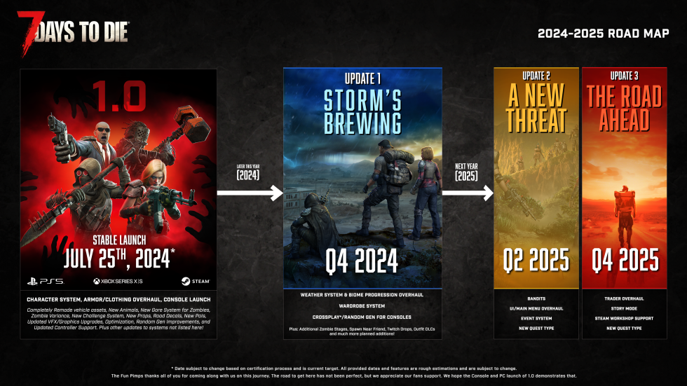

7 Days to Die 1.0
Официальные примечания к выпуску

Важные даты
Текущее расписание
Обратите внимание, что некоторые даты могут измениться.
21 июня – 7 Days to Die 1.0 Experimental – Стримерский уикенд в Steam
24 июня – 7 Days to Die 1.0 Experimental – Публичная экспериментальная версия в Steam
28 июня (предварительная дата) – Консольная версия 1.0 – Добавление в список желаемого на PS5 и Xbox Series X/S
15 июля (предварительная дата) – Удаление устаревшей консольной версии игры из цифровых магазинов
25 июля – 7 Days to Die 1.0 Официальная стабильная версия – Steam и Microsoft PC
25 июля (предварительная дата) – Консольная версия 1.0 – Выпуск на PS5 и Xbox Series X/S, включая скидку 25% на покупку нового продукта для владельцев цифровой версии Legacy на PS4 и Xbox One Telltale Edition. (Скидка зависит от политики консолей)
Стримерский уикенд
Если вы пропустили новости, стримерский уикенд 7 Days to Die 1.0 начнется: В ЭТУ ПЯТНИЦУ, 21 июня в 20:00 МСК. Поклонники смогут увидеть более 270 стримеров из тридцати стран на шестнадцати разных языках в течение этого трехдневного события.
Более десяти лет в разработке
После почти двенадцати лет раннего доступа, долгожданный выпуск версии 1.0 игры «7 Days to Die» наконец-то здесь! Этот знаменательный рубеж ознаменует значительное развитие жанра survival horror, в паре с обновленным выпуском для текущего поколения консолей, который состоится через несколько недель.
Версия 1.0 приносит больше оптимизаций, полировки, улучшений качества жизни, нового контента, новых функций и новых игровых систем, чем когда-либо прежде.
Если вы никогда не играли в 7 Days to Die или не играли в нее какое-то время, вам обязательно стоит ознакомиться с версией 1.0. Опираясь на уже потрясающую основу, это обновление поднимает планку еще выше для жанра survival.
План после версии 1.0
Для нас версия 1.0 – это огромный рубеж, который приведет к равенству игры на всех платформах и предоставит нам инструменты и конвейер движка для еще более быстрого и качественного выпуска контента, обновлений и новых функций на всех форматах, включая кроссплатформенность и многое другое.
Вот краткий обзор нашей дорожной карты функций после версии 1.0, следите за новостями:

Новая система HD-персонажей
В версии «7 Days to Die 1.0» представлена совершенно новая система персонажей, созданная с нуля. Она предлагает абсолютно новые модели высокого разрешения, анимации от первого и третьего лица, вариации и новые шейдеры для кожи и волос, что повышает общий уровень игры. Эта комплексная система улучшает погружение игрока, позволяя создать персонализированный и увлекательный игровой опыт. Вы увидите свои руки в игровом окне, пол, цвет кожи и настоящие перчатки, которые вы носите. Наслаждайтесь вашим полным HD-образом на транспортных средствах, в интерфейсе и с друзьями. Видите, на что смотрит ваш друг по кооперативу благодаря новой системе отслеживания головы персонажа. Новая система предлагает обширные возможности для настройки, включая:
Предустановки: Выберите из множества готовых персонажей, чтобы быстрее начать приключение в Navezgane.
Создайте своего собственного персонажа с широкими возможностями настройки, включая:
Пол: мужской или женский
Раса: черный, белый, азиат, коренной житель
Лицо: каждая раса и пол имеют четыре разных варианта лица, всего 32 варианта лица
Глаза: более тридцати вариантов цвета глаз
Прически: двадцать уникальных причесок
Цвет волос: десять уникальных цветов волос
Усы: пять уникальных стилей усов
Бакенбарды: пять уникальных стилей бакенбардов
Бороды: пять уникальных стилей бород
Новая система брони/одежды для игроков
Вместе с новой системой персонажей в версии 1.0 мы также добавили новую систему брони и одежды высокого разрешения. Эта обширная новая система усиливает погружение игрока, позволяя создать настроенное и захватывающее игровое приключение, где важны сбор, нахождение, создание и улучшение брони.
Видите свои руки в игровом окне с деталями, такими как пол, цвет кожи и фактическая одежда, которую вы носите. Наслаждайтесь видом вашего HD-модели на транспортных средствах, наблюдая, как анимация тканей и рюкзаков оживает. Видите, на что смотрит ваш партнер по кооперативу благодаря новой системе отслеживания головы персонажа. Более того, улучшенная система предоставляет множество возможностей для настройки, позволяя для обширной персонализации, включая:
Шестнадцать полных комплектов уникальной брони с вариантами для мужчин и женщин
Четыре основные группы одежды: головные уборы, одежда для тела, обувь и перчатки.
За исключением примитивного комплекта, каждый комплект брони имеет бонус при ношении всех четырех частей одного комплекта, при этом бонус зависит от качества самого низкого предмета.
Например, если вы носите комплект Lumberjack Armor, вы получите следующие бонусы:
Двойной урожай дерева
На 5% меньше затрат выносливости при использовании топоров с предметом Q1 в комплекте
Использование всех слотов с предметами Q6 изменяет бонус выносливости на 30%
Мы сохранили и переработали большинство модификаций одежды с множеством вариантов, включая:
Очки переработаны как модификации брони
Следующие добавляют +1 к атрибуту:
Восприятие – были Солнечные очки
Сила – была Сигара
Выносливость – были Солнцезащитные очки Tough Guy
Ловкость – были Горнолыжные очки
Интеллект – были Очки ботаника
Модификация Охотника за сокровищами – ранее были Удачные очки:
+10% к получению опыта
+10% к лучшему луту
Радиус сокровищ -1
Очки ночного видения – теперь в виде модификации:
Обновленный экранный эффект
Сигара теперь является модификацией брони:
Добавляет +1 к Силе и +10% к Торговле
Добавлена модификация карманов Quad Pocket Mod:
Несколько модификаций карманов можно добавлять к броне
Должны быть разного размера
Например, две тройные модификации нельзя установить в один предмет брони
Модификация скрытых ботинок – ранее Военные скрытые ботинки:
Уменьшает шум и штрафы за выносливость средних и тяжелых ботинок
Новые модели животных
Наша элитная команда художников персонажей усердно работала над обновлением всех моделей животных, чтобы они соответствовали современным эстетическим стандартам наших обновленных HD-зомби. Система включает новые модели, скелеты, более реалистичные анимации и новый высокотехнологичный шейдер меха для более реалистичной шерсти. Текущий HD-список животных включает:
Олень, благородный олень, волк и пума.
В будущих патчах: медведь, зомби-медведь, кабан, Грейс, стервятник, кролик, змея, дикий волк, койот и стервятник
Эти обновления будут выпускаться поэтапно в патчах по мере завершения анимации и скелетирования, добавляя более живых и детализированных существ к опыту выживания.
Новая система испытаний
Мы отказались от старой системы обучающих квестов и журналов и объединили их в новую систему испытаний. Система испытаний предназначена для того, чтобы помочь новым игрокам освоиться с легкой для понимания вводной линией квестов, которая предлагает стоящие награды. Кроме того, долгосрочные испытания поддерживают интерес игроков, предлагая заманчивые награды за выполнение различных категорий испытаний, обучая более продвинутым механикам. Эта система обеспечивает непрерывные цели как для новых, так и для опытных игроков, улучшая их игровой опыт. Система включает:
Более ста двадцати уникальных испытаний, разбитых на двенадцать категорий:
Основы выживания
Домоводство
Продвинутое выживание
Создание
Торговцы и создание
Сбор урожая
Сбор
Фермер
Выживший
Охотник
Убийца зомби
Система отслеживания квестов-испытаний. Отслеживайте, что хотите, и смотрите свой прогресс
Обменивайте выполненные испытания на опыт. Некоторые испытания можно обменять на опыт и награды у любого торговца. Смотрите каждое испытание для подробностей.
Некоторые предметы имеют помощь в виде игровых спрайтов, что облегчает обучение
Выполняйте испытания в любом порядке и все равно получайте кредиты за свою работу или ресурсы, которые у вас есть
Новые модели транспортных средств
Наши художники также обновили существующие модели транспортных средств, приведя их к паритету с другими улучшенными моделями в версии 1.0. Большинство транспортных средств теперь имеют дополнительные места для хотя бы одного друга. Также доступны новые модификации брони для транспортных средств, которые позволяют им выдерживать износ в пустошах. Многие модификации транспортных средств теперь имеют визуальное обновление модели, так что вы можете видеть установленные модификации. Эти обновления улучшают визуальную привлекательность и функциональность транспортных средств, предлагая более погружающий и приятный опыт вождения в игре.
Обновление включает множество улучшений, включая:
Велосипед
Минибайк
Мотоцикл
Грузовик 4×4 (Теперь имеет 4 стандартных места и может быть модифицирован для размещения 6 игроков)
Гирокоптер (Теперь имеет 2 места, чтобы летать с другом)
Мы добавили новые модификации транспортных средств. Эти модификации видны на модели. Включают:
Велосипед
Модификация света
Мотоцикл
Модификация брони
Грузовик 4×4
Модификация брони от отвала
Гирокоптер
Модификация брони
Модификация света
Обновления случайной генерации мира
Мы внесли несколько улучшений и оптимизаций в нашу систему случайной генерации мира (RWG), делая ее более компактной, быстрой и способной создавать миры с лучшим внешним видом, чем когда-либо прежде, с улучшенной композицией и макетами, повышающими общую четкость и детализацию созданных миров.
Улучшения RWG включают:
Быстрое время создания: Время, необходимое для генерации новых миров, было значительно сокращено.
Расчет плотности районов: Улучшенные расчеты для лучшего городского планирования и макета.
Варианты распределения биомов: Новые варианты для создания более разнообразных и интересных мировых биомов.
Сглаживание дорог: Улучшенная генерация дорог для более плавных и реалистичных путей.
Большие города и больше точек интереса (POI): Примерно на 50% больше точек интереса, с большими городами и большим количеством мест в дикой природе.
Сброс чанков: Улучшенное управление чанками и их сброс для более плавного опыта.
Расположение POI с учетом производительности: Внедрен новый алгоритм размещения POI для повышения производительности, размещая легкие POI вокруг более тяжелых POI.
Биом Горящего Леса возвращается в вновь созданные и предварительно созданные карты RWG.
Улучшения инструментов RWG включают:
Новые предустановки распределения биомов включают:
Макет биома
Центральный лес – по умолчанию
Центральная пустошь
Круг – биомы расположены как круговая диаграмма
Линия – биомы расположены как слоеный торт с поворотом на 90°, то есть лес на юге, пустошь на севере
Биом Горящего Леса возвращается!
Цвета районов
Светло-голубой = сельский
Желтый = промышленный
Синий = коммерческий
Серый = центр города
Зеленый = жилой
Темные цвета каждого из вышеуказанных обозначают районы с меньшей плотностью POI, например, остатки
Красный = торговцы
Белый = дикая природа
Точки появления в лесу можно увидеть при увеличении карты. Они отмечены маленькими крестиками на сельских дорогах и находятся возле точек интереса в дикой природе в пределах 1 км от торговца.
Новые точки интереса:
В дополнение к обновленной системе RWG, наша команда по дизайну уровней добавила множество нового контента с более чем 75 новыми точками интереса, которые будут добавлены в версию 1.0.
Значительные дополнения, улучшения и усилия включают:
Большое внимание уделено новым остаткам, улучшающим производительность и предоставляющим более разнообразные среды для исследования с меньшим количеством зомби. Большинство остатков были созданы для центра города, где было мало таких типов. Эти усилия значительно помогли с производительностью.
Введены новые локации высокого уровня для исследования и покорения:
Отель Haven (5 уровень)
Апартаменты 7 Days (5 уровень)
Атлетический комплекс Navezgane (5 уровень)
Школа Grover (5 уровень)
Театр Minotaur (5 уровень)
6 – новые локации 4 уровня
Добавлена новая система регулирования спавна зомби, которая используется дизайнерами уровней для поддержания высокой сложности POI, но с лучшей производительностью.
Новые варианты зомби и обновления зомби
Наши существующие зомби не остались без внимания. В версии 1.0 представлены несколько новых вариантов зомби с уникальными нарядами. Большинство из них получили несколько вариантов одежды, кожи и волос, которые появляются, создавая более органичный состав больших групп и способствуя погружению.
Значительные дополнения включают:
Медсестра из детской больницы с медвежатами на униформе
Наряд для боулинга для толстого гавайского зомби.
Множество других вариантов добавляются, добавляя свежие визуальные элементы в орду нежити игры.
Зомби-демолишн получил полное обновление модели, соответствующее новейшему поколению зомби-моделей. Этот культовый враг теперь имеет обновленный и более ужасающий вид.
Обновление графики освещения мира
Команда по программированию шейдеров и техническому искусству усердно работала над добавлением общего улучшенного освещения, которое выглядит потрясающе. Улучшения включают:
Более равномерное и последовательное освещение
Пересветленные области уменьшены, а слишком темные области стали легче видны
Детали мировых и игровых моделей более заметны
Теперь можно играть без шахтерской каски или факела в темных областях
Спектры биомов и спектры штормов были переработаны, чтобы придать правильное настроение, но обеспечить более последовательное освещение в целом
AO снова включен
Тени на траве снова включены
В графические настройки добавлена FSR
AMD FidelityFX™ Super Resolution (FSR) использует передовые технологии апскейлинга и генерации кадров, чтобы помочь повысить частоту кадров в поддерживаемых играх и обеспечить потрясающее качество изображения и производительность на практически любом оборудовании.
Оптимизации
Мы усердно работали над оптимизацией игры для всех SKU. Усилия по обеспечению работы игры на консолях принесли свои плоды. Было проведено множество оптимизаций, включая:
Внедрение нового алгоритма размещения POI (точек интереса), который позволяет поддерживать производительность городов, размещая менее нагруженные POI вокруг более тяжёлых.
Создано множество более лёгких POI, чтобы снизить нагрузку на города и добавить разнообразие POI.
В редактор уровней добавлена новая система управления порогом появления зомби, которую дизайнеры уровней использовали для повышения производительности в POI с большим количеством зомби.
Многие арт-объекты уменьшили количество вызовов отрисовки или улучшили настройки в Unity для повышения производительности.
Удалён атлас вырезок.
Внедрена новая система затемнения окон, делающая стекло непрозрачным, пока вы не приблизитесь. Это улучшает производительность (умеренно), особенно для небоскрёбов.
Обновление игры до Unity 2022 LTS с улучшенной поддержкой Vulkan и DX12 (Примечание: производительность DX12 хуже, чем DX11).
Новый менеджер обновлений освещения.
Окклюзия окружения лучше обрабатывает большое количество объектов.
Объекты блоков (реквизит) появляются на протяжении нескольких кадров.
Обновление прогрессии
Мы уделили много внимания общей прогрессии и балансу в версии 1.0. Вот некоторые из наиболее заметных улучшений:
Торговцы дают меньше дуков и ослабленные награды, которые больше не нарушают прогрессию.
В инвентарях торговцев продаются предметы, соответствующие уровню вашего персонажа.
Игра стала немного более ориентированной на создание предметов, и теперь легендарные предметы можно создавать.
Итог: игра стала более сбалансированной, и даже в кооперативной команде игроки будут вовлечены в игру на 70-й день, а одиночные игроки ещё дольше.
Создание предметов
Вернулась возможность создавать предметы 6-го уровня качества.
Инструменты/Оружие/Броня требуют новых легендарных частей.
Торговцы/Порядок биомов
Рект – Лес
Джен – Выжженная земля
Боб – Пустыня
Хью – Снег
Джоэл – Пустошь
Квесты
Прогрессия квестов улучшена, теперь вы получаете задания более высокого уровня от каждого торговца и можете откатиться к заданиям более низкого уровня, если хотите.
Мы добавили новые легендарные части, которые можно получить в сундуках с высокоуровневой добычей и за более высокие награды торговцев.
С их помощью игроки могут создавать легендарное оружие, инструменты и броню Q6.
Реорганизация сборщика росы
Сборщик росы переработан. Теперь он поддерживает 3 инструмента для рабочей станции, один из которых – водяной фильтр. Это изменение делает сборщик росы доступным на ранних этапах игры, но он собирает мутную воду без установленного фильтра.
Улучшенная система расчленения
Вместе с новыми вариантами зомби появилась новая и улучшенная система расчленения, обеспечивающая постоянное расчленение всех типов зомби. Вдобавок добавлены новые частицы кровавых брызг для завершения впечатляющего боевого опыта.
Обновленные дорожные декали
Прощайте, одни из последних наших устаревших активов – оригинальные дорожные декали. Они были обновлены, придав им современный вид, чтобы дороги и участки округа Навезган выглядели более реалистично и убедительно.
Игроки теперь могут наслаждаться улучшенным реализмом с обновлёнными дорожными декалями, на которых больше детализированного мусора и обломков, что добавляет ещё один уровень аутентичности в игровой мир, делая его более живым и увлекательным.
Обновление интеграции с Twitch
Последнее обновление включает новые захватывающие функции для интеграции с Twitch:
Маленькие зомби: новая команда, уменьшающая размер зомби, добавляя веселья и сложности в игру.
Наэкранное расширение: интерактивные функции Twitch теперь отображаются прямо на экране, улучшая опыт зрителей и стримеров.
Эти функции обеспечивают более интерактивный и увлекательный контент как для игроков, так и для их аудитории.
Новые границы мира
В игре теперь есть многослойные границы мира, заменяющие старые зоны радиации. Самый внешний слой – это запретная зона, не позволяет игрокам покидать карту. Внутри неё находится зона, где нельзя строить, чтобы игроки не могли строить слишком близко к краю. При приближении к границе область заполняется туманом, давая четкий визуальный сигнал. Эта система позволяет размещать больше точек интереса (POI) возле краев карты, увеличивая игровую зону и давая игрокам понять, что в этом направлении идти нельзя.
Новые улучшенные игроками сундуки
Представляем хранилища с возможностью добавлять подписи! Начните с простой деревянной коробки, которую можно улучшить до железной, а затем до стальной. Каждое улучшение увеличивает вместимость хранилища, предоставляя больше места для ваших предметов. Кроме того, эти сундуки имеют области для надписей, отображающих текст, что позволяет легко организовывать и маркировать ваши хранимые вещи. Можно добавить до трёх строк текста. Приятного размещения сундуков, выжившие!
Обновление окружающей среды
Команда по окружающей среде была занята множеством новых художественных обновлений, которые ещё больше погрузят вас в версию 1.0, включая:
Новые сиденья в кинотеатрах, новые автоматы с газировкой и напитками, новые камеры для телестудий, новые мини-холодильники для напитков, новые постеры с едой и конфетами, новые ретро-вывески на электричестве и газе, новые неоновые вывески, новые палатки для кемпинга, новый набор для химии, новый модульный кованый забор с разрушительными состояниями. Мемориальная табличка башни Дишонг, надгробие спавнера зомби, модель качелей, коммерческая мусорная корзина, новые потолочные светильники, новые почтовые ящики, новые электрические распределительные коробки, новый грузовой кран.
Новые растения и растительность, такие как: хмель, тыквы и кофейные растения.
Декоративные объекты, такие как: офисные фотографии, трофеи, настенные бизнес-вывески.
Обновления старых активов, таких как: обновленная ловушка с вращающимися лезвиями, обновленные паллеты для переработки (банки, картонная бумага), обновленные камни и валуны, обновленный коммерческий мусорный контейнер, обновленные краны для ванных комнат и кухонь, обновленные заборы с колючей проволокой.
И последнее, но не менее важное: значительная оптимизация почти всех реквизитов окружающей среды для подготовки к консоли. Включая оптимизацию шейдеров и текстур, а также оптимизацию мешей для повышения производительности игры.
Обновления форм блоков
Команда по окружающей среде добавила множество новых форм блоков для строительства. 162 новых формы добавлены, чтобы заполнить пропущенные формы для крыш, перил, столбов, лестниц и многого другого. Вот несколько заметных:
Левые, правые, концевые левые и концевые правые перила для клинообразных лестниц.
Металлические левые, правые, концевые левые и концевые правые перила для клинообразных лестниц.
Наборы длинных рамп на 6м и 8м.
Набор окон клин 60.
Сломанные и пустые версии всех пуленепробиваемых окон (POI).
Также добавлена новая опция в радиальном меню: копирование формы и вращения.
Улучшенный звук
Настройте свои уши, выжившие! Последнее обновление включает улучшенные звуковые функции:
Обновленные динамические и иммерсивные окружающие звуки.
Большое разнообразие птичьих чириканий для обогащения окружающей среды.
Звуки управления инвентарем: уникальные звуки для перемещения различных групп предметов в рюкзаке.
Улучшенные визуальные эффекты частиц
Мы улучшили многие эффекты частиц, сделав их более реалистичными и производительными. Последнее обновление включает:
Совершенно новые частицы крови и расчленения.
Новые эффекты разрушения блоков и физики блоков.
Новые эффекты взрывов.
Новая система затенения для дыма и огня.
Новые эффекты транспортных средств, включая разрушение твердых тел.
Перезапись голосов торговцев
Мы пригласили 5 уникальных актёров озвучки и записали более 1200 уникальных фраз для всех пяти торговцев в игре. Не волнуйтесь, ваши любимые Торговец Рект и Торговка Джен остались с теми же актёрами, но с новыми репликами и новой функциональностью. Новая функциональность включает:
У каждого торговца теперь свой уникальный голос.
У торговцев более 200 реплик, включая сюжетные элементы и сильные намёки на отношения между торговцами.
Субтитры будут переведены на все поддерживаемые языки.
Улучшения для геймпадов
Проведена большая работа по улучшению поддержки геймпадов для лучшего управления, большей интуитивности и наличия родных функций консоли, включая:
Новую систему навигации по интерфейсу, убирающую виртуальный курсор.
Современное управление камерой, которое проще использовать и можно настроить.
Новые системы помощи при прицеливании для геймпадов, ускоряющие наводку при целенаправленном стрельбе или ударе оружием ближнего боя, а также замедляющие камеру при прохождении мимо небольших интерактивных объектов.
Значительно расширенные настройки геймпада в новом меню опций контроллера, включая:
Опции раскладки джойстика.
Разделённую чувствительность камеры по осям X и Y.
Ускорение взгляда.
Настройки мёртвой зоны.
Регулировка силы вибрации.
Переключатель помощи при прицеливании.
Полную переназначаемость геймпада для управления пешком и транспортными средствами.
Новые команды и ярлыки при использовании геймпада, включая:
Прямой доступ к предметам на панели инструментов через радиальное меню, удерживая любую из кнопок выбора панели инструментов.
Мгновенная смена на ранее экипированный предмет с помощью новой кнопки быстрой смены.
Лёгкий бег с помощью нажатия или удерживания.
Расширенная поддержка вибрации контроллера, реагирующая на действия, выполняемые игроком и происходящее вокруг.
Поддержка функций контроллера DualSense, включая:
Отслеживание времени суток, погоды и кровавых лун на световом индикаторе.
Эффекты триггеров при использовании определённых предметов и оружия.
Заметки для моддинга
Обновление игры до Unity 2022.3.29f1.
Обновление HarmonyX до 2.13.0.
ModInfo: теперь требуется ModInfo в формате V2, также свойства "Name" и "DisplayName" больше не являются необязательными, как было объявлено в Альфе 21.
Разбор XML теперь поддерживает блоки "conditional":
Позволяет переключаться между различными блоками XML на основе условий, таких как версия игры, наличие определённого мода и т.д.
Может быть выполнено один раз хостом при загрузке XML, чтобы хост и каждый клиент имели одинаковый результирующий XML, или каждым экземпляром игры отдельно, чтобы хост и каждый клиент имели разные эффекты, например, когда это основано на GamePref.
Также поддерживается на верхнем уровне патчей XML: эти всегда применяются при загрузке XML.
XML патчи теперь имеют новую инструкцию "include", которая позволяет включать другой XML на месте, например, для разделения большого XML на меньшие части или – в сочетании с использованием условных блоков – включать различные XML в зависимости от других условий.
Новый XML "events.xml": позволяет определять события на основе даты (например, Рождество, Хэллоуин и т.д.) и использовать их с условными блоками XML – например, модель трости-посоха, автоматически используемая в качестве оружия в рождественский сезон или модели тыкв на Хэллоуин.
Окно выбора Z для POI или создания мира теперь показывает текущий размер выделения.
Обновлены окна свойств POI, чтобы отразить текущие функции POI.
Отладка:
Виды отладки (F3) теперь запоминают выбранные элементы.
Фильтр CVar больше не может иметь фокус ввода, когда курсор мыши не включён – это предотвращает случайное перезаписывание фильтра во время игры.
График FPS и мониторинг сети доступны в релизах.
Игра предоставляет полностью публикуемые члены сборки для более простого моддинга кода – каждый член, изменивший уровень доступа, получает атрибут "PublicizedFrom", указывающий на исходный уровень доступности. Доступ к изначально не публичным элементам всё ещё является крайней мерой, если другие подходы не удались.
Новый BlockCompositeTileEntity с соответствующим TileEntityComposite:
Это общий блок TileEntity (TE), который позволяет выбирать, какие функции он должен иметь из XML ("композиция").
В настоящее время поддерживаются следующие функции:
Lockable: TE можно заблокировать.
LockPickable: игроки могут взломать замок на TE (используется только в сочетании с Lockable).
Signable: на TE можно писать. Префаб, используемый для TE, должен иметь правильно настроенные TextMesh – по крайней мере, один, но поддерживает столько, сколько нужно.
Storage: TE будет иметь функции контейнера.
Эти TE правильно поддерживают обновление/понижение, поэтому, например, блок с Signable может быть обновлён до блока, поддерживающего Storage и Signable, и сохранить свой текст.
Добавление новых функций не требует модификации перечислений, поэтому в будущем будет проще добавлять настраиваемые функции TE через моды.
Пример использования этих функций можно увидеть на новых хранилищах игроков "cntWoodWritableCrate" и аналогичных.
Приоритет поиска файлов: файлы в пользовательских данных (например, LocalPrefabs) имеют приоритет над модами.
Новый аргумент игры "-newprefabsmod=somemod" позволяет определить мод, в который будут сохраняться новые префабы вместо "LocalPrefabs". Имя мода даётся его внутренним именем из "ModInfo.xml", а не именем папки.
Изменения в XUi
Общая поддержка атрибута "repeat_content" для всех видов. Для не сеточных видов атрибут "repeat_count" указывает количество клонов.
Повторяющиеся элементы автоматически получают дополнительные параметры шаблона, которые можно использовать с привязками шаблона ("${…}"):
Для каждого родительского вида: "repeat_count", указывающий количество элементов, заданных атрибутом "repeat_count", и "repeat_i", увеличивающийся на один для каждого созданного элемента, начиная с 0.
Дополнительно только для сеточных видов: "repeat_col" и "repeat_row", указывающие столбец и строку, в которых элемент будет находиться в сетке – при условии, что размеры сетки не изменяются позже.
Новый атрибут "disabled_tooltip_key" позволяет определить всплывающую подсказку, отображаемую при наведении на отключённый вид.
Новый атрибут "force_hide" позволяет оставлять вид невидимым.
Новые атрибуты для навигации контроллером:
"use_selection_box": следует ли отображать контур вокруг выбранного вида при навигации контроллером.
"gamepad_selectable": вид может быть выбран с помощью контроллера.
"nav_up", "nav_down", "nav_left", "nav_right": ручной выбор, какой вид выбирать при нажатии соответствующего направления на контроллере.
Текстурные виды теперь поддерживают: окрашивание ("color" атрибут) и сохранение соотношения сторон текстуры (атрибут "original_aspect_ratio").
"extends" в XML теперь позволяет исключать определённые подклассы (например, "UpgradeBlock" в блоках), чтобы все его дочерние элементы действительно исключались.
Изменения в квестах
Изменения в квестах теперь не будут приводить к повреждению файлов персонажей в сохранениях – хотя затронутые квесты потеряют свои детали в журнале квестов.
Растения
Растения теперь корректно растут при размещении на том же месте, где до этого росло другое растение – раньше таймер мог не сбрасываться, суммируя старое и новое время роста.
Таланты
Таланты теперь могут иметь требования к уровню для отдельных уровней, а не требовать указания для всех уровней, если это сделано хотя бы для одного.
Инвентарь
“Inventory.PUBLIC_SLOTS” изменён для нацеливания модами, что упрощает реализацию пользовательских размеров панели инструментов. Также добавлено новое свойство “SHIFT_KEY_SLOT_OFFSET”, позволяющее указывать, какие слоты предназначены для использования при нажатии Shift + горячая клавиша слота.
Редактор мира
Редактор мира: предварительный просмотр POI теперь соответствует текущему состоянию при их вращении.
Новости TFP
Мы перенесли старый общий экран новостей меню в новый пропускаемый внутриигровой экран новостей, который поддерживает графику и ссылки для всех форматов. Он будет использоваться для информирования игроков о новых обновлениях патчей и других новостях TFP.
Администрирование сервера
Изменения в serverconfig.xml:
Удалена настройка “SaveGameFolder”. Теперь она всегда основывается на “UserDataFolder”.
Новая настройка “IgnoreEOSSanctions”: позволяет игнорировать санкции EOS, когда игроки хотят присоединиться к серверам. По умолчанию false.
Changelog включая b309
Добавлено:
В предварительном просмотре RWG отображаются места появления игроков на местности как +.
В больших городах RWG могут быть два въезда с каждой стороны.
В больших городах RWG создаётся кольцевая объездная дорога.
В итоговом логе RWG отображается общее время.
Настройка размещения биомов RWG с вариантами Центр Лес, Центр Пустошь, Круг и Линия.
В предварительном просмотре RWG не сохраняются и не разрешаются новые игры, а имя мира отображается красным, если существует мир с таким же именем.
Rwgmixer citybig для карт 8k+ и ограничение на пустошь.
Rwgmixer <prefab_spawn_adjust> biomeTags, ограничивающийся одним или несколькими биомами.
Ограничения на появление POI в RWG на основе плотности окружения в мире.
Окрашивание районов и торговцев в предварительном просмотре RWG.
Типы торговцев RWG находятся в каждом своём биоме.
В предварительном просмотре RWG отменяется генерация при нажатии кнопки отмены и отображается текущее состояние мира.
В предварительном просмотре RWG спрашивается, хотите ли вы сохранить мир при возврате к инструментам редактирования.
Масштабирование и небольшие повороты случайных штампов биомов RWG.
Камера предварительного просмотра RWG перемещается в 10 раз быстрее с клавишей shift и ограничивается возле земли.
Левый клик в предварительном просмотре RWG сбрасывает камеру.
Загрузка префабов RWG пропускает префабы без тегов.
В RWG map_info.xml указан номер семени.
Логирование следующего случайного числа в RWG на различных этапах.
Свойство расстояния городка RWG для переопределения значения по умолчанию в 5.
Конкретные значения миксера гор и городов для леса и сожжённого леса в RWG.
Конкретные значения миксера городов для пустоши в RWG.
Сообщение интерфейса RWG «Внимание: Изменение этих настроек может нарушить прогрессию торговцев».
Планировщик городков RWG использует меньшее минимальное количество плиток (5) каждого типа городков до успеха.
Отскок при ударе транспортного средства при разрушении больших деревьев.
Удары транспортных средств могут вызывать рагдоллы также от их базовой скорости и улучшенной силы вверх.
Свойство позы сиденья транспортного средства, которое устанавливает VehiclePose в аниматоре.
Настройка максимальной скорости транспортного средства быстрее регулируется при увеличении.
Плавное вращение и ограничение скорости колес транспортного средства.
Свойство modRot части транспортного средства, которое устанавливает вращение modT, если есть мод с тегом, иначе 0.
Поддержка задних фонарей у транспортных средств.
Установка задних фонарей на грузовик 4x4.
У транспортных средств появляется подсказка при взаимодействии с физическими коллайдерами.
Свет фар и пыль грузовика.
Световая полоса грузовика отображается в зависимости от установленного светового мода.
Световая полоса грузовика светится и создаёт пыль.
Возможность копировать вращение и форму блока одновременно.
Опция всегда использовать английские кардинальные направления на компасе независимо от выбора языка игры.
Свойство CreativeMode для блока/предмета.
Свойство ItemsOnEnterGame для сущности пропускает предметы CreativeMode Console, если не установлено.
Команда звука Min Script.
Предметы отображаются как отсутствующие, если данные предмета были удалены.
Quad Pocket Mod.
Анимации поворота для игрока от третьего лица.
Пробелы во всех названиях в интерфейсе групп объёмов спящих.
Команда spawn для Min Script.
Команда waitalive для Min Script.
Активные спящие ИИ иногда будут бодрствовать и блуждать.
Блуждающие спящие ИИ используют позицию появления как центр блуждания.
Тип триггера объема спящего Wander.
Локализация для urinalCommercialMounted.
Действия мини-событий AddPartFPV и AddPartTPV.
Декали местности обрезаются там, где они отделены от местности.
Проверка размещения земельного участка игрока на границах мира.
Шейдер Skybox Atmosphere создаёт туманный коричневый земной план.
Туман возле границы мира.
Игроки отталкиваются от границы мира и видят сообщение на панели инструментов.
Игроки не могут размещать блоки возле границы мира.
Движение рюкзака игрока останавливается на границе мира.
Затухание/появление животных и зомби (добавлено постепенное затухание в шейдеры Game/Character и Game/Animal/Fur. Объединены проверки видимости в EntityAlive, который управляет уровнем затухания. Добавлено EModelBase Fade, использующее MaterialPropertyBlock на рендерах с тегом LOD/E_MESH).
Локализации активности на UDS.
Лёгкая система скриптов Min Script.
Свойства объема спящих в Min Script: поле редактирования, загрузка/сохранение в prefab xml.
Векторы движения шейдера травы.
Рендеринг FSR (установите настройки антиалиасинга на FSR Low, FSR Medium или FSR High).
Звуковые эффекты интерфейса задач и обновленные sounds.xml.
Консоли с языковыми специфическими клавиатурами.
Добавление кнопок уровней к телепортеру POI.
Синхронизация локализации для фильтра телепортера POI.
Команда консоли для дистанции видимости огней.
Команда консоли для дистанции видимости графики.
Подкоманды консоли automove: gototarget, settarget, clearlookat, setlookat, line и orbit.
Взрывчатые и коктейли Молотова не могут быть сброшены, когда они готовы к использованию.
Локализованный селектор биомов для плейтеста.
Тип маски для бороды, чтобы выключить бороду с шлемами.
Частицы рвоты из рта копа и радиоактивного стервятника.
Общие FastTags.
Выделенные серверы могут отказать в применении санкций, консольные игроки не могут присоединяться к P2P-сессиям с санкцией.
Улучшено информирование игрока о доступности разблокировки достижений.
Первая тестируемая версия расчленения «большой мамочки» с маскированием.
Запрещено изменение опции «Creative Mode» на экране продолжения игры.
Лаунчер не добавляет аргумент графического API, если он уже передан вручную.
Разрешена переназначение кнопки заморозки ИИ.
Хост P2P игры теперь может исключать игроков из интерфейса «Сообщить о игроке», доступного с контроллера.
Цензура «Сообщения дня» выделенного сервера.
OnSelfEquipUpdate для выполнения триггерных эффектов на самом предмете.
Требование баффа для новой брони ArmorGroupLowestQuality… на самом деле.
Группы эффектов для задач при их завершении.
Логирование ошибок при загрузке gamestages.xml.
Избегание отображения текста в игре от заблокированных пользователей.
Фильтрация текста UGC в браузере сервера.
Окно сообщения игрока для UGC.
XML, локализация и иконки для набора кресел театра.
Команда консоли gfx texbias.
Поддержка вариации глаз у отрубленных голов фералов.
Обработка игровых событий GameEvent с использованием CVars для значений.
Фильтрация текста UGC.
Окклюзия для животных, людей, зомби и транспортных средств.
Добавлен holdtorepeat ввод для пролистывания страниц, комбобоксов и других элементов интерфейса, использующих правую ручку для навигации.
Добавление подсказки «Hint» для переключателей/триггеров для игроков.
Локализация для house_old_ranch_12, The McStab Residence.
Отключён управляемый контроллером курсор, переключена навигация на левую ручку. Добавлены ограничения на возможность выбора кнопок категорий, элементов страницы, селектора окна, селектора вкладок и т.д. Комбобоксы теперь могут быть выбраны напрямую, и значение можно настроить с помощью правой ручки.
Вкладки в интерфейсе теперь нельзя выбирать напрямую с помощью направленной навигации.
Пустое окно осмотра имеет альтернативные инструкции по управлению для контроллеров + скорректированный формат. Динамически переключает метки, если изменяется устройство ввода.
Консоли переключаются между языками.
Атрибут по умолчанию для XUi Window Groups. При использовании навигации DPad это позволяет группам окон выбирать компонент представления, к которому должна привязываться выбор, когда группа окон открывается. Применено по умолчанию к применимым группам окон в XUI_Menu.
Опция блокировки спринта добавлена, чтобы предотвратить отключение спринта, когда игрок перестаёт двигаться. Добавлен индикатор иконки спринта рядом с полосой выносливости, чтобы указать, когда спринт активен.
Защита сброса чанка добавлена к торговым автоматам, установленным игроком.
Свойство SwapMats сущности (новая версия ReplaceMaterialx, совместно использует материалы, требует тег LOD).
Набор форм Window Wedge60.
Варианты Plate Wedge60 половина, половина левая и половина правая.
Принудительное использование EOS для сборки представления.
Новые моды шлемов для каждого атрибута: добыча, опыт, нахождение сокровищ и ночное видение.
Контроль эмиссии фары VPHeadlight.
Угловой куб с внешним скруглением добавлен в меню форм.
Настройка для блокирования текста и голосового чата, что действует как будто у игрока установлено CommunicationAllowed = False. По умолчанию не заблокировано.
Начальная версия навигации интерфейса DPad для контроллеров.
Свойство CanBlocksReplace блока, позволяющее заменять блок при размещении новых блоков.
CanBlocksReplace для дорожной краски.
Новое переназначаемое действие игрока под названием Swap Item/Quick Select: нажмите, чтобы переключаться между текущим и ранее экипированным предметом. Удерживайте, чтобы вызвать радиальное меню для быстрого выбора предмета с панели инструментов. Скорректированы некоторые стандартные привязки контроллера для удобства.
Область активности ИИ (тепло) откатывается и соседская откатывается при срабатывании.
Информация о тепле F8 показывает откат, улучшенные цвета и лучшее расположение под блоком FPS.
Команда консоли ai activityclear (также ac).
Булевая анимация InAir. Переключение приседания больше не действует как переключатель при удерживании, будет постоянно приседать в режиме полёта.
Триггер анимации JumpLand.
Маленький пример нахождения в воздухе/приземления в аниматоре от третьего лица под слоем Jump для двухручного ружья.
Функциональность переназначения контроллера. Страницы переназначения кнопок добавлены в экран опций контроллера. Ползунок для настройки замедления курсора интерфейса и переключатель для привязки курсора добавлены в настройки контроллера.
Система UDS/Activity.
Улучшение добавления метода постобработки для действий XML.
Улучшения замедления камеры при помощи прицеливания. Включает интерактивные блоки, включая контейнеры для добычи, настенные переключатели и т.д. Нет замедления камеры для предметов и интерактивов во время боя.
Улучшения подхвата прицела помощи. Первичное коммитирование. Камера подталкивается в направлении цели, если это была последняя сущность, над которой прошёлся игрок при начале прицеливания или приближении прицела.
Добавлены расширенный список опций контроллера и улучшенные элементы управления видом/прицеливанием. Включает: чувствительность обзора контроллера по осям X/Y, инверсию по оси Y, ускорение обзора, процент мёртвой зоны осей движения/обзора и опции раскладки джойстиков. Всё это можно настроить в Опции > Управление > Опции.
Звуковые эффекты расчленения зомби.
Версия для Linux проверяет настроенные системные лимиты на соответствующие значения и выводит предупреждения в логи, если они слишком низкие (количество открытых файлов, максимальное количество отображённых файлов).
Trailer_07.
Trailer_08.
Отображение локализованных имен в телепортере POI и возможность их поиска.
Звуковые эффекты Twitch Hordestone (начало петли, конец, начало интерфейса) и обновленные XML.
Сбалансированы озёра, реки, кратеры, каньоны, городки и настройки дикой природы RWG.
RWG создаёт и предварительно просматривает миры отдельно от их сохранения.
Предварительный просмотр RWG не загружает префабы и штампы после первого поколения.
Задержка восстановления выносливости для мощных атак уменьшена с 3 до 1,5 секунд в buffPowerAttackStaminaStunt.
Новый алгоритм генерации биомов RWG.
Перемещён биом пустоши RWG в центр.
Улучшены значения по умолчанию для биомов RWG и ограничены минимальные/максимальные диапазоны.
Улучшен штамп заполнителя биомов RWG.
Биомные плитки RWG уменьшены до 1/4 размера.
Камера предварительного просмотра RWG перемещается вверх/вниз относительно камеры, и клавиша C также перемещается вниз.
Улучшена планировка интерфейса создания RWG.
Загрузка префабов RWG пропускает папки, содержащие путь /Prefabs/Test.
Улучшена скорость штамповки RWG и использование памяти.
Улучшена скорость штамповки биомов RWG.
Оптимизировано создание путей RWG.
Скрыт редактор префабов и опции RWG на консольных устройствах.
Улучшены сообщения и логирование создания RWG.
Скорректированы значения миксера пустынных/снежных гор и городов RWG.
Слайдер гор в интерфейсе RWG ограничен 50%.
Слайдеры равнин, холмов и гор в интерфейсе RWG при нуле показывают 100% равнин.
Уменьшено количество самоповреждений при ударе транспортного средства о рагдоллы до 30%.
Улучшено ограничение движения транспортного средства на границе мира.
Установлены позы сидений транспортных средств (0 по умолчанию (не водители), 15 для велосипеда, минибайка, мотоцикла, грузовика, гироскопа).
Улучшены данные по крутящему моменту, максимальной скорости и турбонаддуву транспортного средства и формат XML.
Уменьшено затухание скорости удара транспортного средства при высоких соотношениях массы.
Свойство модификации транспортного средства включает modT, если установлено.
Свойство части транспортного средства к тегу.
Уменьшен размер коллайдеров взаимодействия с транспортным средством.
Коллизия ловушки шипов изменена с плоской плоскости ниже блока на куб, который немного меньше полного блока.
Удалён сбор ткани из квестовых сумок для предотвращения эксплойта.
Улучшены правила для игроков, когда они могут пить воду в мире.
Улучшена физика/коллайдеры падающих деревьев и вариации физики в зависимости от размера.
Улучшено падающее дерево, чтобы позволить нескольким ударам о землю и более чем одному удару о сущность с повреждениями на основе массы.
Улучшено качество синхронизации сети падающих деревьев.
Удалено подрагивание шеи паука-зомби.
Ранние рецепты медицинских препаратов теперь включают Fort Bites, Plaster Casts и Recog, которые теперь можно создавать в костре с использованием колбы и удвоенной стоимости рецепта.
Уменьшена стоимость пакета крови для создания Fort Bites в химической станции с 5 до 2, так как они довольно редки, и удвоенная стоимость в костре была бы слишком дорогой.
Обновлены категории костра, добавлен вкладка медицины и разделение медицинских и химических предметов в соответствии с химической станцией.
Обновлены таймеры создания и топлива в рабочих станциях для лучшей видимости на фоне некоторых значков предметов.
Улучшено свечение/стекло фары 4x4 и минибайка.
Реализована первая версия глобальной прогрессии.
Требуется 10 квестов для изменения уровня.
Теперь можно устанавливать карманные моды разных размеров одновременно.
Скорректированы LOD для serviceTruckGenericPrefab, чтобы лестница исчезала раньше, чем грузовик.
Интерфейс объёма спящих всегда показывает список индексов триггеров и не очищается при изменении типа.
Улучшены рагдоллы игрока и камеры смерти.
Имена групп игровых этапов сокращены до короткого формата с цифровой сортировкой.
Скорректировано положение света на префабе рабочего света, чтобы предотвратить появление световой сферы.
Обновлены значки для cntCabinetBottom и cntCabinetBottomRandomLootHelper.
Моды Barrel Extender больше нельзя устанавливать на дробовики.
Скорректированы спавны для GS140, чтобы помочь предотвратить слишком быстрое завершение орд.
Улучшено обновление миниатюр префабов, чтобы скрыть игрока, отключить небо и установить цвет фона на серо-голубой.
Уменьшен размер шрифта подписных ящиков, чтобы лучше соответствовать всем языкам.
Настроен спектр пустошей для использования нового спектра пустошей.
Обновлен самолёт с новыми художественными элементами.
Стоимость краски для всех текстур уменьшена до 1 краски каждая.
Падающие блоки местности до валунов случайных размеров.
Улучшены визуальные эффекты взрывов и падения блоков.
Улучшено время жизни, разрушение, скорость и проверки выхода за пределы мира падающих блоков.
Пересмотрена логика инициализации Mumble для предотвращения спама GameObject.Find на экране загрузки.
Увеличены настройки дрожания и смешивания TAA.
Применена фильтрация текста автора на консолях и только видимого текста.
Уменьшена масса коллайдера физики сущностей.
Новый формат карты игрока, который делит карту на регионы, которые также сжимаются.
Скорректированы коллайдеры рагдоллов собаки.
Улучшены визуальные эффекты и физика ракет.
Оптимизировано ModifyValue прогрессии.
Обновлен оглушающий посох с дополнительными требованиями, чтобы предотвратить использование игроков как зарядных станций.
Уменьшена частота тумана, дождя и штормовой погоды.
Новые треугольные индексы BlockShapeNew используют меньше памяти.
Оптимизировано оборудование для использования меньшего объёма данных для пустых слотов.
ItemValue none сериализует меньше данных (серверы и клиенты должны иметь это).
Ограничение количества максимальных игроков при хостинге игры на консольных устройствах.
Рефакторинг ActivityStateManager в RichPresence.
Удаление «dev» предметов и значка из творческого меню в консольной сборке.
Диалог телепортера POI выделяет последний выбранный элемент.
Отключена кнопка входа в игру для редактора префабов и редактора мира.
Теперь ModifyCVar TriggeredEffect может использовать уровни для списка значений через запятую.
Настройка квестовых целей происходит до проверки состояния любых целей.
Удалены деревянные и металлические столы из OversizedConversionTargets.txt, чтобы позволить их складывать и иметь стабильность.
Рецепт для сборщика росы больше не требует водяного фильтра для создания.
Заменены предметы для создания водяного фильтра на инструменты Сборщик, Брезент и Водяной фильтр в инвентарях торговцев и добыче.
Апартаменты_05 (T2 очистка/доставка/зачистка от заражения) доступны для квестов.
Ночное видение в стиле белого фосфора (новый алгоритм).
Карты сокровищ и сундуки с заданиями «Закопанные припасы» теперь уничтожаются при опустошении, чтобы помочь предотвратить проблемы с поломанными контейнерами добычи, проваливающимися через мир или слишком ранним исчезновением при переполнении инвентаря игрока.
Химические станции теперь можно продавать торговцам.
Рефакторинг POI футбольного стадиона (T5 очистка/доставка/зачистка от заражения/восстановление энергии) для квестов.
Оптимизировано Utils Cleanup Materials для предотвращения создания мусора.
Комментированы книги «Игла и нить» в loot.xml.
Обновлены настройки тегов и слоев для theaterSeatUpFullArmsUpPrefab для правильной работы коллайдеров.
Пересчитаны границы для других префабов театральных кресел.
Логирование сообщений о выполненных/отказанных командах от клиентов.
Оптимизировано получение существующего объекта в пуле игровых объектов.
Оптимизирована скорость спавна блоков чанка.
Удалена школа aaa_school_k6_01.
Оптимизирован доступ к кластеру чанков.
Оптимизирован OnDisplay чанков.
Удалён устаревший блок RandomTintColor.
Оптимизирован доступ к миру и кэшу чанков.
Оптимизировано обновление света для сущностей/реквизита.
Оптимизированы BlockValue misc и BiomeDefinition small funcs.
Увеличено максимальное количество типов блоков до 64k (префабы конвертируются при загрузке).
Смещения родительских значений BlockValue в более быстром формате.
Уменьшено максимальное количество типов предметов до 16k.
Локализация для house_modern_11: от The McStab Residence до Casa Diaz.
Свойство _DayPercent шейдера менеджера неба глобально.
Экран привязки контроллера обновлен для использования кнопок XUI для совместимости с навигацией DPad. Улучшено разрешение новых диаграмм контроллера и обновлены атласы.
Добавлено больше опций для демо-версии.
Навигация DPad скорректирована для приоритизации ближайших соседей и выравнивания с текущим выбранным элементом.
Ограничено общее количество профилей игроков (на консоли) (+изменено ProfileSDF на статический класс) (+добавлена функция подсказки при отключении элемента).
Обновлены aaa_all_glass с новым набором форм Window Wedge60.
Обновлены частицы разрушения для различных блоков ловушек.
Обновлены UV настройки fbx и xml для pillar50CornerPlate.
Обновлены коллайдеры на fenceBroken1 и 2, чтобы снаряды могли проходить мимо них проще.
Рефакторинг стартапа для задержки загрузки `GamePrefs` до готовности данных сохранения (для будущего изменения, которое будет включать оболочку для некоторых платформ).
Взрывной урон работает неправильно.
Сопротивление взрыву (блоки) некорректно.
Восстановлено использование проникающих снарядов на запертых сейфах и сундуках.
Удалена настройка GamePref SaveGameFolder.
Обновлены коллайдеры разрушенной химической станции, чтобы снаряды могли проходить мимо неё проще.
Материал ceilingLight01_player и lanternDecorLightBlockVariantHelper теперь можно утилизировать.
Обновлены снежные мертвые кусты, кустарники и изгороди, чтобы включить их в начальные квестовые навигационные значки.
Скорректирован коллайдер блока земельного участка, который слишком сильно выступал, вызывая проблемы.
Взрыв разделён на ExplodeTarget и ExplodePosition.
Переработана команда сброса региона: Поведение по умолчанию теперь учитывает все обычные правила системы сброса чанков и действует как быстрый, безопасный способ инициировать сброс всех незащищённых чанков. Добавлены альтернативные экспериментальные режимы для отладки, позволяющие пользователям обходить определённые статусы защиты при необходимости.
Исправлены привязки контроллера в режиме полёта.
Обновления курсора интерфейса для контроллера. Добавляет ускорение и замедляется при наведении на интерактивные элементы. Динамически переключается между курсором контроллера на основе спрайтов и системным курсором мыши при переключении между контроллером и мышью.
Обновлены кашпо с свойством LODCullScale для предотвращения парящих растений на расстоянии.
Технический долг квестов.
Интегрированы иконки Mega Crush и воды.
Интегрированы иконки конфет.
Пересмотрена система подхвата прицела помощи. Более надёжный подхват прицела, который рассчитывает, когда игрок впервые начинает прицеливание, и менее вероятно, что он выйдет из строя из-за препятствий для луча мира EntityPlayerLocal.
Скорость ходьбы игрока теперь варьируется в зависимости от того, насколько сильно нажата ручка движения.
Загрузка `SimpleMeshFile` напрямую в память Native Mesh. Экономит управляемую память, не требуя пула или стольких управляемых выделений памяти. Немного увеличивает зарезервированную память, но увеличение значительно меньше, чем экономия управляемой памяти.
Уменьшено количество ткани, необходимой для создания клейкой ленты.
Установлено свойство ScrapTimeOverride на 10 секунд для всех инструментов, оружия, брони и материалов для чтения, чтобы пользователи имели больше времени для отмены случайной утилизации.
Звуки стали холодильника. Обновлён префаб стального холодильника для использования нового звукового цикла. Обновлены звуки, блоки, XML добычи.
Старая внутренняя и внешняя древесная дверная аудиосистема.
Звуки захвата и размещения двухколёсных транспортных средств для интерфейса инвентаря. Обновлены sounds.xml и items.xml для аудио интерфейса инвентаря.
Звуки захвата и размещения деталей для интерфейса инвентаря. Обновлены sounds.xml и items.xml для аудио интерфейса инвентаря.
Звуки захвата и размещения бутылки кислоты для интерфейса инвентаря. Обновлены sounds.xml и items.xml для аудио интерфейса инвентаря.
Звуки захвата и размещения копья для интерфейса инвентаря. Обновлены sounds.xml и items.xml для аудио интерфейса инвентаря.
Звуки захвата и размещения дубинки для интерфейса инвентаря.
Звуки захвата и размещения бура и бензопилы для интерфейса инвентаря.
Новые звуки раскатов грома и обновлённый AudioSource_Thunder для пространственной визуализации 2D.
Звуковые петли птиц для лесного биома.
Звуковые петли птиц для пустынного биома.
Звуковые петли сверчков для лесного биома.
Звуковые петли сверчков для пустынного биома и обновлённый EnvironmentAudioMaster.prefab для запуска звуков птиц и сверчков, удалены неиспользуемые биомы.
Звуки захвата и размещения навоза для интерфейса инвентаря. Также обновлены .meta файлы для нескольких звуковых файлов, чтобы использовать правильные настройки.
Аудио интерфейса инвентаря: различные виды оружия и инструментов.
Аудио для ретро холодильника и обновлённые XML.
Звуки катающегося мусорного бака.
Звуки разрушения пластика.
Звуки открывания и закрывания двери кабинки.
Звуки открывания и закрывания деревянной ограды.
Звуки открывания и закрывания двери трейлера.
Звуки открывания и закрывания одиночной и двойной стеклянной двери.
Совместные квесты больше не учитываются в прогрессии квестов.
Улучшено движение падающих блоков на клиентах.
Скорректированы настройки звука двигателя минибайка и добавлены звуки ускорения/замедления.
Удалён таймаут для получения новостей из хранилища, так как они часто не загружались на XBOX.
Комментарий в serverconfig для включения имен миров, которые поставляются.
Новый звук двигателя минибайка.
Исправлено:
Исправлены проценты биомов в интерфейсе RWG, чтобы в сумме они составляли 100%.
Проверка наложения биомов RWG StreetTile иногда давала сбой.
Порталы RWG перекрывали биомы.
Параметры равнин, холмов и гор в RWG были равны и не составляли 40%, 40% и 20% соответственно, как указано в интерфейсе.
Проверка радиации на восточной и южной границах мира RWG была смещена на 1.
Сообщение на форуме: спам NRE при выходе из игры после выполнения команды "cr f" на RWG_tile.
Дороги RWG располагались слишком далеко от края карты.
Цвета биомов в интерфейсе Advanced Generation RWG не совпадали с цветами в мире.
Биомы RWG могли отсутствовать.
Камера предварительного просмотра RWG дергалась при взгляде вниз и скорость движения изменялась в зависимости от FPS.
Границы RWG и биомы использовали один и тот же генератор случайных чисел.
Поиск штампов RWG не был безопасен для многопоточности.
Результат генерации RWG зависел от времени выполнения потоков.
Сообщение на форуме: спам NRE при выходе из игры после выполнения команды "cr f" на RWG_tile.
Статистика места в транспортных средствах не обновлялась при добавлении модуля расширенных сидений.
Транспортные средства не могли быть размещены, если они находились по центру на некоторых типах блоков, таких как дорожная разметка и пластины.
Поведение ввода для бега было согласовано между клавиатурой и контроллером. Ввод теперь может работать как переключение при нажатии или как удержание и отпускание при длительном нажатии. Турбо на транспортных средствах также было приведено в соответствие с вводом на клавиатуре; теперь это удерживаемый ввод на всех устройствах.
На прицелах и коллиматорных прицелах появились красные узоры.
Настройка «Trigger Properties» для ключевых замков, установленных на «Trigger Unlocks», приводила к тому, что дверь разблокировалась, но не открывалась.
Торговцы теперь открываются в 4:05.
Аудио заикалось и производительность падала при воспроизведении боевой музыки и сражении с множеством зомби.
Повторяющиеся слова в описании навыка «perkUrbanCombatSneakingLongDesc».
Звук прыжка игрока задерживался относительно нажатия клавиши.
Звук неуязвимого торговца менялся, если игрок прыгал во время звучания.
Описание навыка «PerkSniperCompleteLongDesc» не имело заголовка, отделенного двоеточием.
Приоритет сети врага 2 никогда не использовался.
Локализация для «RunAndGunRank2 ‘twitch’» должна читать как «twitchy».
Невозможно лечить другие травмы игроков с помощью медицинского крема алоэ, первой медицинской повязки и аптечки.
NRE при открытии сейфа с оружием с таймером.
Оружие иногда требовало дважды включить мод, чтобы снова его активировать после ремонта.
При скрытном перемещении и стрейфинге наблюдался небольшой сбой в повороте камеры.
Муззл-флэш робота-турели был повернут набок для клиентов.
Предотвращена возможность размещения сервера с пустым значением региона, из-за чего сервер не отображался бы в списке серверов.
Выход из игры сразу после активации переключателя вызывал NRE в главном меню.
Предотвращены случаи, когда игрок не мог прыгнуть на полную высоту при прыжке и движении.
Двери торговцев не блокируются.
Падающие деревья больше не вращаются на месте перед падением для клиентов выделенных серверов. Настроено клиентское движение падающих деревьев, чтобы оно лучше соответствовало скорости на сервере.
Список рецептов не показывался для ингредиентов, если они не использовались для более низкого качества.
Анимации обрушения блоков не отображались на выделенных серверах.
Турели могли быть размещены около границ мира и внутри торговцев.
Игроки могли копать или взрывать за границами мира игроков.
Экран выбора профиля не отображался, если игрок подключался к многопользовательской игре по приглашению на новом аккаунте (применяется профиль по умолчанию при подключении без него).
Текст смещался с анимированными многоточиями при загрузке мира (улучшения для китайского языка).
Ошибка TRC R5034A (добавлено сообщение об ошибке поиска сервера).
Двери анимировались при блокировке или разблокировке.
Сетка модели регдолла вращалась некорректно под воздействием не регдолл-костей.
Камера регдолла игрока перемещалась в новую позицию.
Двери анимировались при блокировке или разблокировке.
Исключение «EndOfStreamException» с текстом на знаке игрока в префабах POI.
Текст смещался с анимированными многоточиями при загрузке мира (решение с прыжками текста между строк).
Объемы спящих с минимальным количеством 0 всегда создавали одного или более спящих.
Проблемы с прозрачным стеклом, скрывающим лица, и неправильной текстурой.
Окно привилегий отменяется, но игра все равно запускается.
Композитный, деревянный и примитивный луки не всегда проигрывали анимацию натяжения.
Автоматически блокируемые двери игрока разблокировались при взаимодействии с ними.
Текст смещался с анимированными многоточиями при загрузке мира (локализация изменена после отмены).
Кнопка «Взять» была активна, даже если инвентарь был полон.
Автоматически блокируемые двери игрока разблокировались при взаимодействии с ними.
Нажатие «C» при включенном переключении приседания не отключало его.
Взрывы часто вызывали падение блоков под землей.
Автоматически блокируемые двери игрока разблокировались при взаимодействии с ними.
Большие множественные взрывы приводили к значительному временному использованию памяти.
Двойники клипались через воду в чанках.
Двойники прорисовывались поверх чанков и конфликтовали с ними по Z-координате.
Текст смещался с анимированными многоточиями при загрузке мира.
Экран выбора профиля не отображался, если игрок подключался к многопользовательской игре по приглашению на новом аккаунте.
Состояние окна создания персонажа приостановлено (при входе в окно редактирования персонажа выполнялось действие «OnClose»).
Общие проблемы с BBCode ([RGBA] BBCode иногда отображался как [RGB][A] для игроков, и имя профиля не экранировалось в диалоговом окне удаления).
Регдоллы на объектах, масштабируемых с помощью xml, имели неправильные соединенные якоря.
Пишущие сундуки были пустыми при повторном входе в игру.
Список серверов больше не показывал названия серверов (+незначительная рефакторизация классов цензуры для обработки краевых случаев).
Краш при обезглавливании зомби-паука.
Двойные двери из сетки теперь ремонтируются с помощью ресурсного кованого железа.
Дорожная разметка мерцала поверх ландшафта.
Предварительный просмотр размещения плоских моделей, таких как билборды, отображался под поверхностями, такими как земля или кубы.
Стрельба и смена оружия/ракетницы/робота-турели оставляли различные анимации эффектов частиц, которые застревали при каждом их оснащении.
NRE при выходе из редактора префабов после размещения свечи.
Настройка дальнего отсечения камеры через туман не работала.
Дым от ракеты исчезал при детонации или истечении срока действия.
Цвета муфты ракетницы.
Состояние окна создания персонажа приостановлено.
Параметр игры «Persistent Profiles» теперь включен по умолчанию.
Некоторые перезагрузки при отмене иногда застревали.
Положение/вращение IK руки/ноги для грузовика 4x4 с 6 сиденьями.
Все виды оружия проходили через анимацию перезарядки при смене во время перезарядки.
Эффект экрана смерти был слишком темным.
Вещи класса Time Bomb могли быть сброшены как активный стек, если активированы на панели инструментов, затем перемещены или перетащены в другое место и сброшены оттуда или перетащены и сброшены.
Автоматически блокируемые двери игрока разблокировались при взаимодействии с ними.
В здании house_old_modular_05 квест на заражение, но нет зараженных спящих или тайника.
Отсутствует материал в префабе IronBucketWater.
Звуки перезарядки, смены оружия, прицеливания имели тикающий/перегруженный звук, иногда аудио не воспроизводилось.
Источник звука от удара током/электричества не обновлялся, когда прикрепленный объект отталкивался, а при возгорании наблюдалась задержка.
Сигнальная ракета Molotov была включена, когда была не зажжена.
Активный молотов и заряды с таймером при броске не загорались.
Отмена перезапуска при смене языка возвращала вас в окно общих настроек вместо окна видео.
Ограничение максимального числа игроков при размещении игры на консольных устройствах (корректно применены значения по умолчанию для всех платформ).
Головной убор Preacher теперь использует систему морфирования головных уборов.
Источник звука от удара током/электричества не обновлялся, когда прикрепленный объект отталкивался, а при возгорании наблюдалась задержка.
Проблемы с текстурами Office_03.
Пиксели фары стирались на фоне неба.
Минибайк и мотоцикл не оставались в вертикальном положении с пассажиром, но без водителя.
Общее диалоговое окно затемнялось с фоновым изображением на весь экран.
Странный световой эффект от шлема после взаимодействия с автоматической турелью.
Попытка изменить качество предварительного просмотра adv gen после выхода из adv gen приводила к NRE.
Триггеры переключателей не работали, если у игрока было задание, и переключатель был настроен как «триггеры» и «активируемые».
Ошибка ArgumentOutOfRangeException при попытке отрубить голову краулеру.
Состояние PowerManager для определенного чанка не сбрасывалось, когда чанки сбрасывались через RegionFileManager.
Источник звука от удара током/электричества не обновлялся, когда прикрепленный объект отталкивался, а при возгорании наблюдалась задержка.
Отсутствовали триггеры для «onSelfCrouchWalk» и «onSelfCrouchRun» для «buffCrouching» и прогрессии для «perkAnimalTracker».
Повторное подключение к многопользовательской игре с другими игроками вызывало Argument Exception.
Добавлены меры защиты от возможного NRE при удалении торгового автомата, принадлежащего игроку, который ранее был удален из постоянных данных игрока.
Смена типа боеприпасов на лук или арбалет на тип, которого у вас нет, приводила к тому, что визуально не выгружался ранее загруженный тип боеприпасов.
Глубокие столкновения блоков.
При игре на выделенном сервере открытие экрана игрока вызывало NullReference Exception и ошибку.
Ошибка при чтении UV-координат сетки «» — канал текстурных координат «0» не найден.
Улучшение системы триггеров / объемов спящих #2.
Функция «ModifyCVar TriggeredEffect» теперь может использовать уровни прогрессии для списка значений, разделенных запятыми.
Переименован журнал игрока в журнал заданий (PlayerJournal в ChallengeJournal).
Проблема с замедлением от арматуры, когда игрок ее не касался.
Проблема с обратной логикой для времени восстановления вывихнутых ног при активных стероидах.
Обеспечено локальное цензурирование текста (включая большую рефакторизацию для повышения удобства использования и поддержки классов цензуры текста).
Удален эксплойт в функциях сбора и ремонта коллекторов росы, получая бесплатные полимеры.
POI уровня T0 имели тот же уровень добычи, что и POI уровня T1.
Исправлена проблема на выделенных серверах, когда падающие деревья телепортировались к началу мира через один кадр после их создания.
Исправлены случаи, когда деревья в собственности POI иногда создавали несколько конфликтующих моделей деревьев на клиентах. Исправлены случаи, когда деревья в собственности POI не учитывали изменения рельефа POI (дыры или холмы) при первом посещении их клиентом, в результате чего казались врезанными в измененный рельеф или парящими над ним.
Система персонажей теперь использует правильное расположение для материалов тела/головы/рук.
Рельеф Навезгане.
Ошибка при загрузке AssetBundles, когда они использовались несколько раз, но с разными типами имен файлов.
Дублирование точек торговцев.
Исключения при отображении выделенных серверов в списке серверов.
Замена / переосмысление элементов «Departure_Bridge_01 / 02».
Потребляемые предметы не приносили пользы в некоторых условиях.
Проблемы с запуском лаунчера игры при создании каталогов данных в версии для Windows Store.
Очистка материалов для MeshDescription.
Утечки материалов XUiV_Texture в 4 контроллерах.
Все виды оружия проходили через анимацию перезарядки при смене во время перезарядки.
Удалена ошибочная обработка витаминов и обезболивающих через навык лечения критических ранений у врача.
Игроки могли перезарядить арбалет, используя прицелы.
Столбы с сеткой могли передавать свои состояния повреждений, иногда становясь неуязвимыми.
Все виды оружия проходили через анимацию перезарядки при смене во время перезарядки.
Исключение при завершении работы игры через диалоговое окно неудачной авторизации (например, если Steam не работает).
Проблема, позволявшая эффекту проникновения Spear Hunter Vol 6 работать с основной атакой.
Отсутствует локализация для редактора меток POI.
В здании farm_04 отсутствует часть деревянного забора.
Событие появления бродячей орды не использовало цель правильно.
Сопротивление взрывам (блоки) неверно.
При присоединении к игре по приглашению на консолях с домашнего экрана управления игроком переставали работать.
Требования к игровому событию не инициализировались дружественно к модам.
Всегда рассчитывайте снаряжение отдельно от обработки пассивных эффектов.
Функция «UpdateLight» использовала целевое значение для игроков.
Пилорама_01 плавающий лист колючей проволоки.
Проблемы со стабильностью в POI: apartments_01.
В POI: downtown_filler_24 переключатель открывает неправильную дверь.
Проблемы с устойчивостью в downtown_filler_24 из-за окон.
Неправильное отображение значений сопротивления блоков.
Проблемы с плавающей травой в remnant_downtown_filler_09.
Текстуры контейнеров с добычей менее 1/2 едва различимы, в то время как другие текстуры текста различимы на тех же настройках.
Проблемы с плавающей травой в downtown_filler_11.
Обрушение вывески в gas_station_07.
Ошибки, если игрок держит отсутствующий блок.
У нескольких пушек была одинаковая ошибка с анимацией экипировки и переключения.
У камней и снежков были проблемы с анимацией в 3-м и 2-м лице, позиция удержания и анимация также были неправильными.
Проблемы со стабильностью в gas_station_06.
Проблемы со стабильностью в school_01.
В доме house_old_ranch_04 исправлена проблема с триггером.
В доме house_old_ranch_10 исправлено пересечение рельефа.
В доме house_old_ranch_04 исправлены пересекающиеся занавески.
Проблемы со стабильностью в part_driveway_gateway_checkpoint_01.
Сообщение на форуме: неправильная текстура в store_discount_01.
Сообщение на форуме: ошибка покраски шкафа в office_06.
В доме house_modern_24 исправлена проблема с плотностью рельефа.
Переключение приседания больше не действует как переключатель при удержании, оно будет продолжаться в режиме полета.
В здании countrytown_business_07 столбы из цепной сетки не совмещены с ограждением из брезента.
В здании countrytown_business_07 проблемы с устойчивостью занавески.
Ошибка «Индекс вне диапазона» в интерфейсе новостей при любой попытке пролистывания новостей до их загрузки. Также закрыт доступ к `entries` и `currentIndex`.
Многоблочное размещение могло перекрывать защиту размещения торговца.
Частицы пыли от камня были слишком бледными возле поверхностей.
Панель информации о предмете мерцала при выборе предметов в инвентаре.
Запрос: параметр анимации, игрок «прыгает».
Скрытый дебафф на восстановление выносливости при уровне гидратации между 75 и 50.
Игра «BlockGameEvent DestroyOnEvent» не работала для добавленного события.
Звук «PlaySound» не воспроизводился для событий, основанных на позиции.
Превью POI в тайлах не переключались корректно при множественных нажатиях клавиш.
Использование бура или бензопилы прямо перед их завершением ремонта ломало предмет/размещение в руках и анимацию.
Удален код, позволявший размещать многоблочные фигуры в перекрывающих конфигурациях при включенном режиме бога (перекрывающееся размещение по-прежнему разрешено в режиме редактирования). Исправлен код, предназначенный для обхода проверки многоблочного размещения по коллайдеру игрока при включенном режиме бога.
Добавлен новый многоблочный менеджер для решения различных случаев, когда данные многоблоков могли стать несогласованными на границах чанков. Менеджер откладывает размещение многоблоков POI до тех пор, пока все пересекающиеся чанки не будут одновременно синхронизированы и не завершат декорирование. Он также защищает не POI многоблоки от разрезания пополам системой сброса чанков, группируя все пересекающиеся чанки.
Транспортные средства вызывали полные сетевые обновления, когда не использовались.
Если поменять боеприпасы во время перезарядки, ваше оружие становится невидимым.
Нельзя лечить травмы других игроков, если оба игрока являются союзниками.
Нельзя лечить переломы других игроков, если оба игрока являются союзниками.
Двери с триггером разблокировки не блокируются при сбросе POI.
Ошибка загрузки аудио при убийстве змеи.
В здании trader_jen заменено дерево можжевельника 4 м на вспомогательную версию.
Каменные топоры, молотки и гвоздометы требуют больше действий для улучшения блоков, чем нужно, и вы больше не получаете опыта за улучшение блоков.
Частицы от помпового ружья.
Питч турбо транспортного средства был непоследовательным.
Камень орды теперь возвращается, если время истекает.
Таймер для камня орды теперь увеличен.
Провал через землю не работает на транспортном средстве.
Провал через землю останавливает все движение.
Действия по замене блока могли удалить коренную породу.